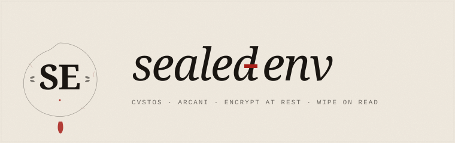

Shai-Hulud npm worm Nov 2025
A self-replicating worm in the npm ecosystem scanned dev machines
and CI runners for .env files and exfiltrated them to
public GitHub repos. Thousands of credentials leaked.

Encrypt your .env.
Unseal it at deploy.
A cross-stack (Node + Java / Spring Boot) library for encrypted-at-rest secrets, with optional TOTP-bound unsealing for production deploys. Built against the supply-chain attacks that broke 2024–2026.
The problem
.env didn't survive 2024–2026.
A self-replicating worm in the npm ecosystem scanned dev machines
and CI runners for .env files and exfiltrated them to
public GitHub repos. Thousands of credentials leaked.
A popular GitHub Action was compromised. Every job using it dumped its environment variables into public CI logs. The blast radius reached tens of thousands of repos.
A coordinated wave of stolen CI tokens used to publish trojaned
packages and harvest more secrets — leveraging the very tokens
most teams keep next to their .env.
The pattern is the same: read access to the file system or to the process environment becomes total credential access. Encrypting at rest is not enough — if the master key leaks alongside the file, the vault opens.
The solution
For solo devs and private repos.
Defends against: backup leaks, accidental git pushes, heap dumps after key wipe.
For shared repos and CI.
basicDefends against: insider tampering, master-key-only compromise (HMAC fails before decryption attempt).
For production deploys.
teamDefends against: compromised CI steps, captured tokens replayed against another deploy, AitM phishing of the operator.
basic team enterprise
───── ──── ──────────
.env.sealed .env.sealed .env.sealed
│ │ │
▼ ▼ ▼
┌─────────┐ ┌─────────┐ ┌─────────┐
│ AES-GCM │ │ HMAC │ │ HMAC │
│ decrypt │ │ verify │ │ verify │
└────┬────┘ └────┬────┘ └────┬────┘
▼ ▼ ▼
plaintext ┌─────────┐ ┌─────────┐
│ AES-GCM │ │ TOTP │
│ decrypt │ │ token │
└────┬────┘ │ verify │
▼ └────┬────┘
plaintext ▼
┌─────────┐
│ deploy │
│ bind │
└────┬────┘
▼
┌─────────┐
│ AES-GCM │
│ decrypt │
└────┬────┘
▼
plaintext30-second tour
A .env.sealed file written by the Node CLI decrypts cleanly
from a Java / Spring Boot service, and vice versa. Verified byte-for-byte
by automated cross-stack interop tests on every commit.
// 1. seal your existing .env (CLI)
$ SEALED_ENV_KEY=$(openssl rand -hex 32) \
npx sealed-env seal .env
// → writes .env.sealed (commit this)
// 2. read at startup
import { loadSealed } from "sealed-env";
loadSealed();
console.log(process.env.API_KEY);// application.yml
sealed-env:
enabled: true
path: .env.sealed
fail-fast: true
// in any bean — values arrive decrypted
@Value("${API_KEY}")
private String apiKey;Threat model
A security tool without a published threat model is marketing. Ours is here, mapping each defense to a real 2024–2026 incident.
| Attack class | Defended by |
|---|---|
| Shai-Hulud npm worm (env exfil) | basic |
| Backup leak / public S3 | basic |
| Spring Boot heapdump CVEs | basic (key wiped after derivation) |
Insider tamper of .env.sealed | team |
| tj-actions / GhostAction CI compromise | enterprise + CHALLENGE-BIND |
| TOTP AitM phishing (EvilProxy) | enterprise + CHALLENGE-BIND (partial) |
| Compromised production host with shell | Out of scope (no defense possible at runtime) |
| Compromised KMS / operator laptop | Out of scope (v0.3.x: HSM-backed keys) |
Help build it
sealed-env is built openly in the Caribbean coast of Colombia.
It's MIT licensed and there is no company behind it — yet. Right now it
needs people who care about three things:
¿Hablas español? Soy David Almeida, 18 años, dev backend autodidacta en Bucaramanga. Escríbeme en davidalmeidac@proton.me o por GitHub. Buscando feedback técnico, colaboradores, y eventualmente un equipo.
Sponsor
sealed-env is MIT and free forever — but the time to keep
it well-maintained, audited, and growing isn't free. Sponsorships go
directly to:
Prefer a one-time tip?
Buy me a coffee on Ko-fi ☕100% goes to the project — Ko-fi takes no cut on standard tips.